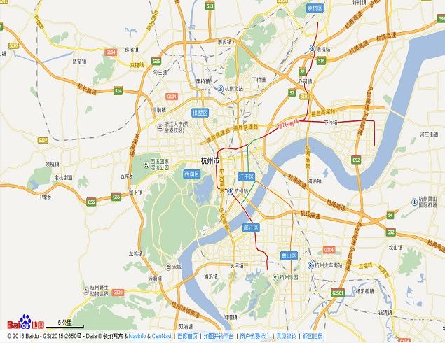

杭州拥有两个国家级风景名胜区——西湖风景名胜区、“两江两湖”（富春江——新安江——千岛湖——湘湖）风景名胜区；两个国家级自然保护区——天目山、清凉峰自然保护区；七个国家森林公园——千岛湖、大奇山、午潮山、富春江、青山湖、半山和桐庐瑶琳森林公园；一个国家级旅游度假区——之江国家旅游度假区；全国首个国家级湿地——西溪国家湿地公园。杭州还有全国重点文物保护单位25个、国家级博物馆9个。全市拥有年接待1万人次以上的各类旅游景区、景点120余处。
返回